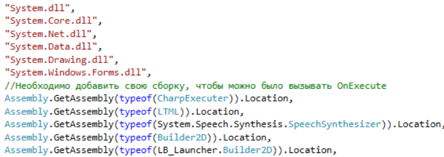
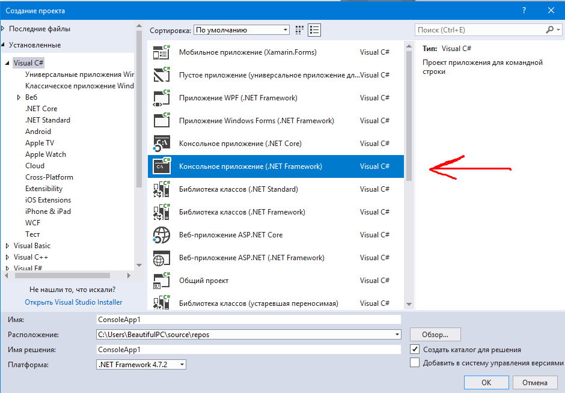
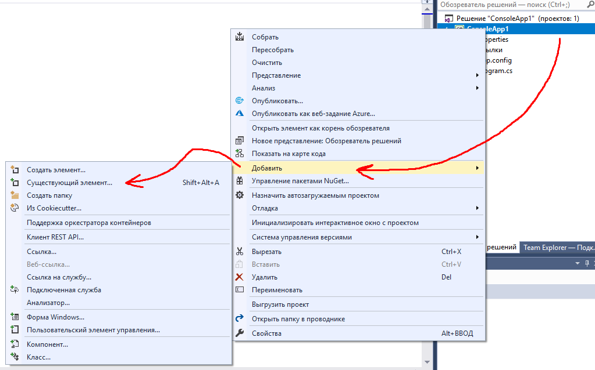
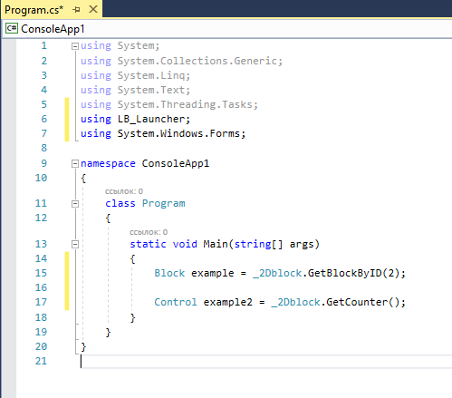
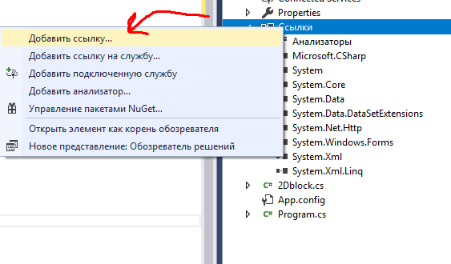
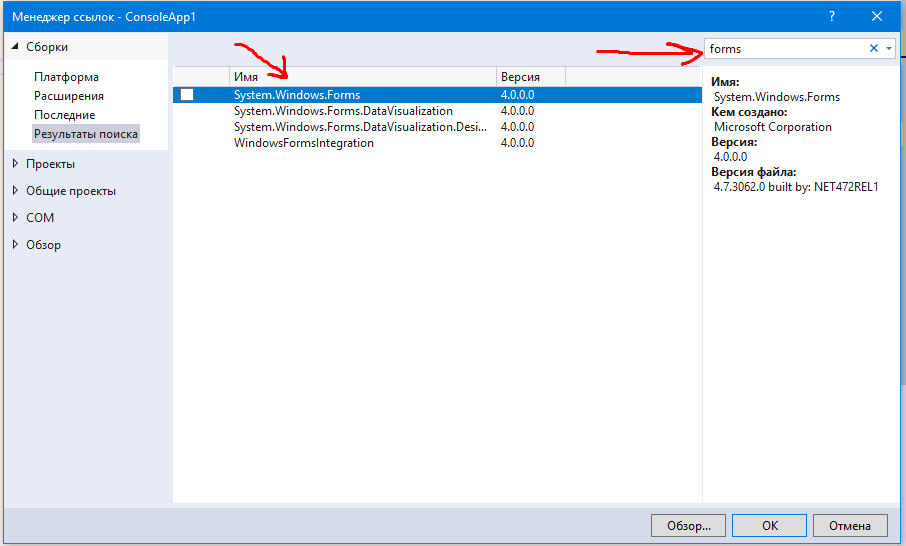

Visual Studio
Подключенные Using:
Подключенные dll:

Создайте приложение Win Forms (net framework)

Нажмите сначала на проект.
Нажмите правой кнопкой мыши по свободному месту. выберите "добавить" и нажмите на "существующий элемент". 
Скачайте 2Dblock.cs с этого сайта с этой страницы и добавьте в проект.
Теперь в Program.cs вы можете добавить using LB_Launcher и обращаться: _2Dblock.GetBlockByID(2) к примеру

Внимание!!! Также можно добавить в проект ссылку на System.Windows.Forms.
 